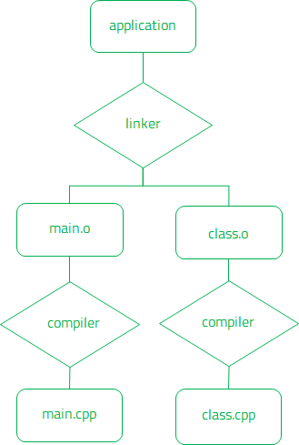

Introduction
Qbs is a build automation tool designed to conveniently manage the build process of software projects across multiple platforms.
Features
Qbs provides the following benefits:
- Declarative paradigm
- Well-defined language
- Platform and programming language independence
- Correct and fast incremental builds
- Extensible architecture
- Easy integration to IDEs
Declarative Paradigm
When writing a project, it is important to describe the build tasks and dependencies between them, rather than the build order. It is difficult to determine the correct build order in complex projects, especially during parallel builds. The build tool should bear that burden, not the developer.
With a declarative language, Qbs enables you to express intent rather than specifying single build steps. This provides the appropriate level of abstraction for a build system. For example, dependencies can be created between products, such that the target artifacts of the dependency can be used as input to the build rules in the context of the depending product. In addition, you can export dependencies and properties to other products.
Qbs is modular with clean interfaces between modules. A module is a collection of properties and language items that are used for building a product if the product depends on the module. The properties that can be set for a module are used to control the behavior of the toolchain used to build the module.
Qbs itself knows nothing about file types or extensions, and therefore all source files in a product are handled equally. However, you can assign file tags to an artifact to act as markers or to specify a file type. Qbs applies a rule to the source files of the project and chooses the ones that match the input file tags specified by the rule. It then creates artifacts in the build graph that have other filenames and file tags.
Products and projects can contain probes that are run prior to building, for instance to locate dependent headers, libraries, and other files outside the project directory.
Well-Defined Language
Qbs projects are specified in a QML dialect. QML is a concise, easy to learn, and intuitive language that is used successfully in the Qt project. Its core is declarative, but it can be extended with JavaScript snippets for extra flexibility.
Qbs builds applications based on the information in a project file. Each project file specifies one project that can contain several products. You specify the type of the product, such as an application, and the dependencies the product has on other products.
The product type determines the set of rules that Qbs applies to produce artifacts from input files. The input files can be divided into groups according to their type or purpose, for example. A group can also be used to attach properties to products.
The following is an example of a minimal project file that specifies the product type, application name, source file, and a dependency on the cpp module:
Application {
name: "helloworld"
files: "main.cpp"
Depends { name: "cpp" }
}
For more information, see Language Introduction.
Platform and Programming Language Independence
Qbs can be used for any software project, regardless of programming language, toolkit, or libraries used. Qbs has built-in support for building applications for Windows, Linux, macOS, Android, iOS, tvOS, watchOS, QNX, and FreeBSD, as well as for cross-compilation. It can be easily extended to support further platforms.
Invoking qbs build from the command line automatically builds the project for the current host platform using the best available toolchain and settings, unless a default profile is set. You can configure additional profiles for each toolchain you want to use and select the profile to use at build time.
For example, to build applications for Android devices, you would need to set up a profile for the Android toolchain and select it when you build the application. If you name the profile Android, you would then enter the following command:
qbs build profile:Android
For more information, see Building Applications.
Platform and programming language support is implemented as a set of modules that your product depends on. In the language example above, the dependency on the cpp module determines that the C++ sources are compiled and linked into a binary.
Alternatively, you could use the CppApplication convenience item that implies a dependency on the cpp module:
CppApplication {
name: "helloworld"
files: "main.cpp"
}
Additionally, if the sources use Qt, you need a dependency to the Qt.core module, and so on.
In addition to building projects, Qbs can install the build artifacts to a location from where they can be run on the desktop or on a device. Qbs modules can be used to create installers for the end users of the applications. For example, the dmg module contains properties and rules for building Apple Disk Images, which are typically used to distribute applications and installers on macOS. The innosetup, nsis, and wix modules contain properties and rules for building installers for Windows platforms.
Correct and Fast Incremental Builds
Qbs is an all-in-one tool that generates a build graph from a high-level project description (like qmake or CMake) and additionally undertakes the task of executing the commands in the low-level build graph (like make).
Qbs automatically takes advantage of multi-processor and multi-core systems to achieve maximum build parallelization. By default, running qbs without any arguments is roughly equivalent to running make -j<n> where n is the number of CPU cores. Similarly, Qbs allows the number of concurrent jobs to be explicitly specified using its own -j option.
Qbs has knowledge about the whole project, and therefore builds remain correct even when you build sub-projects, because Qbs ensures that all dependencies are built too. This virtually eliminates the need for clean builds.
Qbs uses dynamic build graphs with build rules that can generate a variable number of files and that are executed only when needed. When figuring out which rules to execute, Qbs starts at the product type and then looks for a way to produce artifacts with matching file tags from source files, using a chain of rules that are connected by their respective input and output tags. For an example of how rules are applied when building products, see Rules and Product Types.
The Qbs build rules can produce a variable number of outputs. If the input changes, only the required rules are applied at build time. If a rule is applied, all the dependent rules are applied as well, but only those. This feature ensures the correctness of the build graph after source code changes without having to re-configure the whole project.
Changing properties that do not affect the build, because they are not used by rules, will not cause the project to be rebuilt. The use of properties is tracked. Generated artifacts that cease to exist are deleted to avoid picking outdated generated artifacts and indefinitely increasing the size of the build directory.
Fast incremental builds are crucial for a fast edit-build-run cycle. Instead of retrieving the timestamps of generated files, Qbs uses the time stamps stored in the build graph. This is especially important on Windows, where file system operations are slow.
If the project files were not changed, the build graph is loaded from disk. It is stored in a binary format that can be loaded much faster than the real project files. The project files are parsed only if they were changed.
Extensible Architecture
You can create your own custom modules and items and make Qbs aware of them.
You store the custom modules and items in a subdirectory of the project directory and specify the path to the subdirectory as a value of the qbsSearchPaths property. For example, if the custom module is located at my-modules/modules/modulename/modulename.qbs, you would specify it in the project file as follows:
Project {
qbsSearchPaths: "my-modules"
For more information, see Custom Modules and Items.
IDE Integration
Qbs can be used not only from the command line, but also in combination with an IDE, such as Qt Creator, Microsoft Visual Studio, or Xcode. Qt Creator directly supports Qbs projects. Visual Studio and Xcode users can use Qbs to generate Microsoft Visual Studio and Xcode projects. For more information, see Generators.
Qt Creator
Qt Creator uses the same Qbs library as the Qbs command line tools. Therefore, it can retrieve all the information required to build a single file or project through a defined public API. Qt Creator provides accurate information about the build progress and displays a project tree that reflects the logical structure of the project, instead of presenting low-level information, such as the file system structure. Adding or removing source files keeps the existing project file structure intact.
For more information about using Qbs to build projects from Qt Creator, see Setting Up Qbs.
Build Process

The build process of a product starts by examining the type property of the product. It contains a list of file tags that are similar to MIME types.
The following example product contains one file tag, application:
Product {
Depends { name: "cpp" }
type: ["application"]
files: ["main.cpp", "class.cpp", "class.h"]
}
Qbs then searches through all rules available in the context, meaning rules that are defined in the project or those that are made available through the dependency on a module, such as the compiler and linker rules pulled in from the cpp dependency in the example.
When Qbs finds a rule that produces one or more artifacts with the relevant file tag, it looks at the depencencies of that rule and finds out that it produces artifacts tagged obj. It then finds a rule that produces obj artifacts that takes .cpp artifacts as input.
Module {
// ...
Rule {
inputs {"cpp"]
Artifact [
filePath: input.fileName + ".o"
fileTags: {"obj"]
}
prepare: [
// g++ -c main.cpp -o main.o ...
}
}
//...
}
There is no rule in the current context that produces .cpp files, but we have defined .cpp files as inputs for the product. When we added a dependency on the cpp module, that dependency also pulled in another Qbs primitive called the file tagger. The file tagger looked for files matching the pattern *.cpp, and then applied the cpp tag to those input files:
Module {
// ...
FileTagger {
patterns: "*.cpp"
fileTags: ["cpp"]
}
//...
}
Since the .cpp files are input files, they by definition have no other dependencies, and we can go back the opposite way in the tree starting with the compiler rule described above.
This design works well for generated files. The .cpp artifacts could come from another rule that produced them by processing some other input, either instead of or in addition to the raw files listed in the product.
The compiler rule will be invoked twice, once for each .cpp file, producing a separate object file for each one. Then the linker rule will be invoked. Its multiplex property is set to true, which means that instead of producing one output per input and invoking the rule multiple times, all input will be collected before invoking the rule only once to produce the final application object.
The standard versus multiplex rules map well to the compiler and linker processes. The compiler takes one input file to produce one output file, whereas the linker takes multiple input files to produce one output file.
Finally, after the linker rule has been invoked, it produces an artifact tagged application. Because the product's type property did not contain other file tags, the build process is now complete.